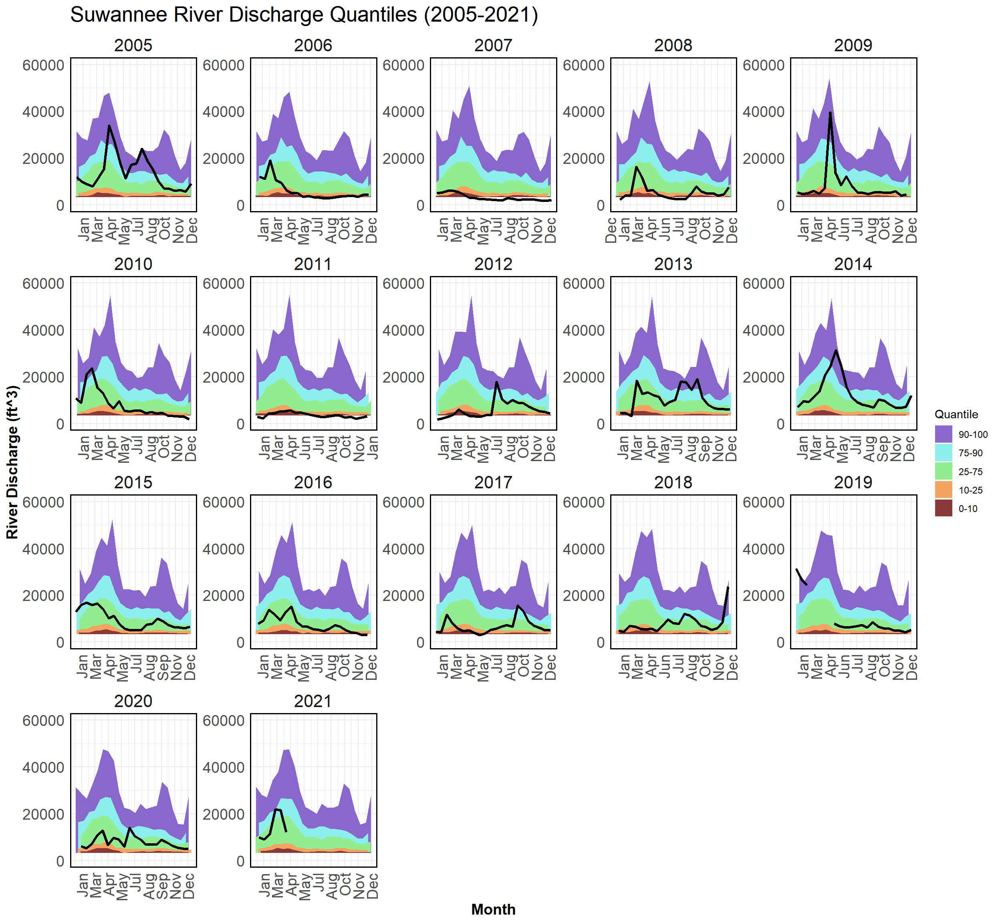
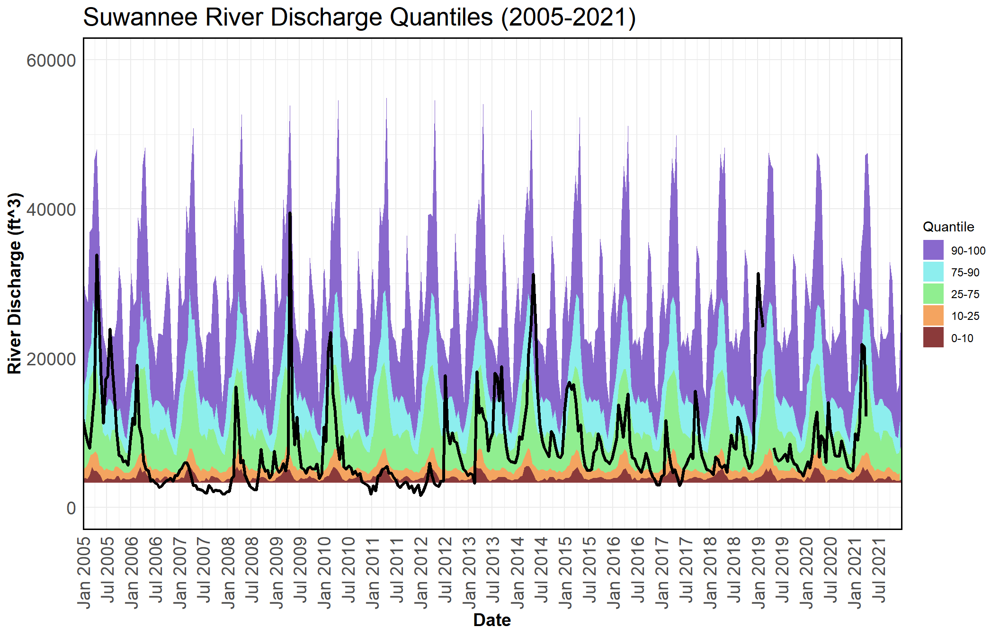
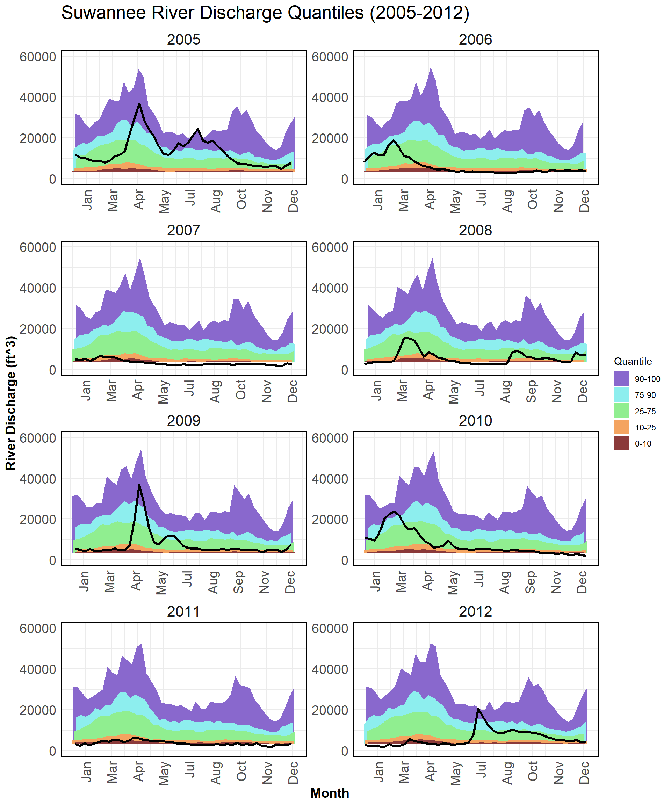
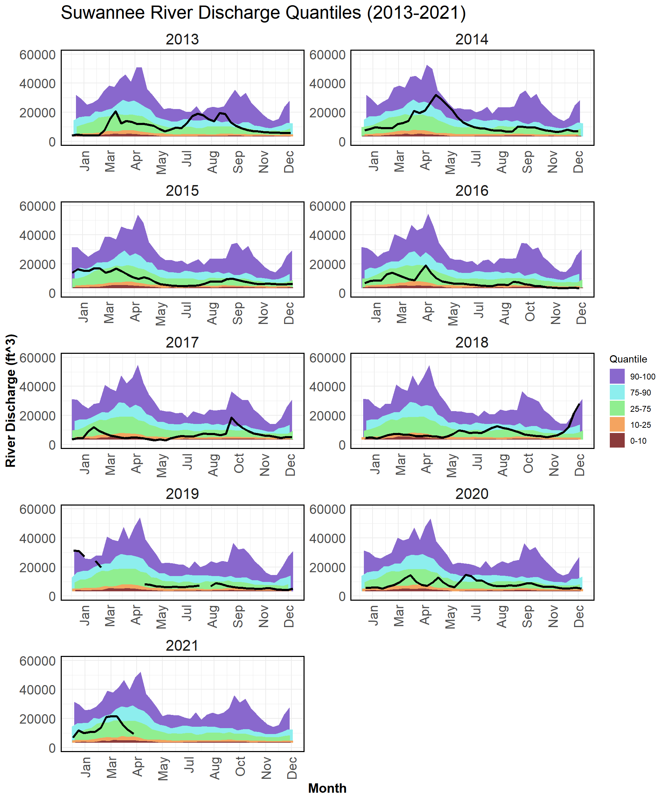
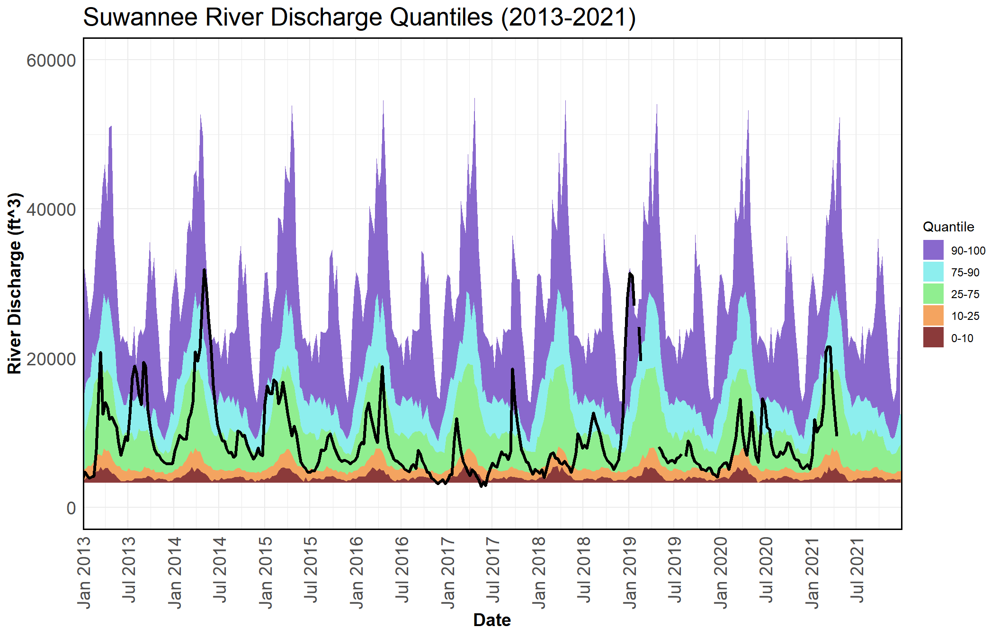

Chapter 3 River Discharge Figures
A percentile is a value on a scale of one hundred that indicates the percent of a distribution that is equal to or below it. For example, on the map of daily streamflow conditions a river discharge at the 90th percentile is equal to or greater than 90 percent of the discharge values recorded on this day of the year during all years that measurements have been made. In general,a percentile greater than 75 is considered above normal, a percentile between 25 and 75 is considered normal, and a percentile less than 25 is considered below normal.
These data are retrieved via the waterData package in R made available by U.S. Geological Survey (USGS). These data are collected at the USGS 02323500 Suwannee River station near Wilcox, Florida. This site is located in Levy County, Florida (latitude 29.58968 and longitude -82.93651 in degrees).

Figure 1. River discharge (by convention CFS, y axis) from the USGS Wilcox, Florida gauge (USGS 02322500) for the years 2005-2021 (solid black line). The areas of color represent percentiles where each percentile is a value on a scale of one hundred that indicates the percent of a distribution that is equal to or below it. For example, on the map of daily streamflow conditions a river discharge at the 90th percentile is equal to or greater than 90 percent of the discharge values recorded on this day of the year during all years that measurements have been made. In general, a percentile greater than 75 is considered above normal, a percentile between 25 and 75 is considered normal, and a percentile less than 25 is considered below normal. The percentiles are based on the period of record for this gauge station.

Figure 2. River discharge (by convention CFS, y axis) from the USGS Wilcox, Florida gauge (USGS 02322500) for the years 2005-2021 (solid black line). The areas of color represent percentiles where each percentile is a value on a scale of one hundred that indicates the percent of a distribution that is equal to or below it. For example, on the map of daily streamflow conditions a river discharge at the 90th percentile is equal to or greater than 90 percent of the discharge values recorded on this day of the year during all years that measurements have been made. In general, a percentile greater than 75 is considered above normal, a percentile between 25 and 75 is considered normal, and a percentile less than 25 is considered below normal. The percentiles are based on the period of record for this gauge station.

Figure 3. River discharge (by convention CFS, y axis) from the USGS Wilcox, Florida gauge (USGS 02322500) for the years 2005-2012 (solid black line) representing the years preceding observed extreme low discharge conditions 2010-2012. The areas of color represent percentiles where each percentile is a value on a scale of one hundred that indicates the percent of a distribution that is equal to or below it. For example, on the map of daily streamflow conditions a river discharge at the 90th percentile is equal to or greater than 90 percent of the discharge values recorded on this day of the year during all years that measurements have been made. In general, a percentile greater than 75 is considered above normal, a percentile between 25 and 75 is considered normal, and a percentile less than 25 is considered below normal. The percentiles are based on the period of record for this gauge station.
Figure 4. River discharge (by convention CFS, y axis) from the USGS Wilcox, Florida gauge (USGS 02322500) for the years 2005-2012 (solid black line) representing the years preceding observed extreme low discharge conditions 2010-2012. The areas of color represent percentiles where each percentile is a value on a scale of one hundred that indicates the percent of a distribution that is equal to or below it. For example, on the map of daily streamflow conditions a river discharge at the 90th percentile is equal to or greater than 90 percent of the discharge values recorded on this day of the year during all years that measurements have been made. In general, a percentile greater than 75 is considered above normal, a percentile between 25 and 75 is considered normal, and a percentile less than 25 is considered below normal. The percentiles are based on the period of record for this gauge station.

Figure 5. River discharge (by convention CFS, y axis) from the USGS Wilcox, Florida gauge (USGS 02322500) for the years 2013-2021 (solid black line) representing the years since 2010-2012 low flow conditions including the initiation of the Lone Cabbage Reef restoration project. The areas of color represent percentiles where each percentile is a value on a scale of one hundred that indicates the percent of a distribution that is equal to or below it. For example, on the map of daily streamflow conditions a river discharge at the 90th percentile is equal to or greater than 90 percent of the discharge values recorded on this day of the year during all years that measurements have been made. In general, a percentile greater than 75 is considered above normal, a percentile between 25 and 75 is considered normal, and a percentile less than 25 is considered below normal. The percentiles are based on the period of record for this gauge station.

Figure 6. River discharge (by convention CFS, y axis) from the USGS Wilcox, Florida gauge (USGS 02322500) for the years 2013-2021 (solid black line) representing the years since 2010-2012 low flow conditions including the initiation of the Lone Cabbage Reef restoration project. The areas of color represent percentiles where each percentile is a value on a scale of one hundred that indicates the percent of a distribution that is equal to or below it. For example, on the map of daily streamflow conditions a river discharge at the 90th percentile is equal to or greater than 90 percent of the discharge values recorded on this day of the year during all years that measurements have been made. In general, a percentile greater than 75 is considered above normal, a percentile between 25 and 75 is considered normal, and a percentile less than 25 is considered below normal. The percentiles are based on the period of record for this gauge station.